✦ ✦ ✦
十六の魂 図鑑
見えないものと、どう出会い、どう関わるか。
その形の数だけ、魂の型がある。あなたは、どの系譜か。
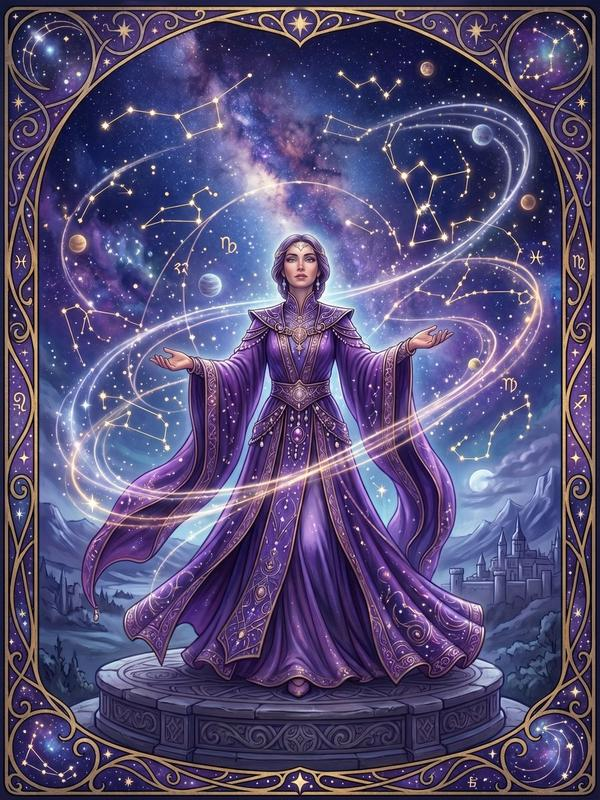
NORB受信 / 霊的 / 畏怖 / 構築
天啓の預言者
私には、視えてしまう。 世界が次にどう動くかが——。
必殺技【天啓の眼】
この魂を読む →
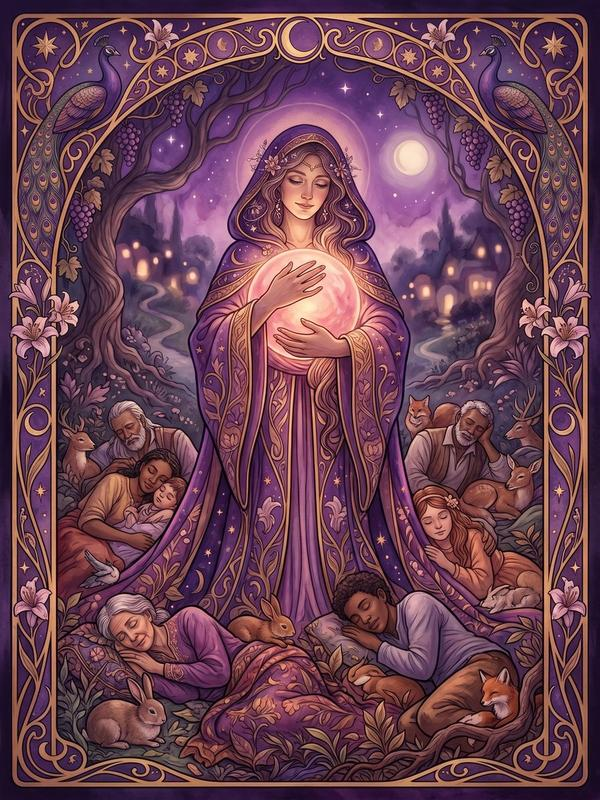
NORF受信 / 霊的 / 畏怖 / 流動
慈愛の依代
私が抱えれば、 世界は少し軽くなる。
必殺技【痛みの依代】
この魂を読む →
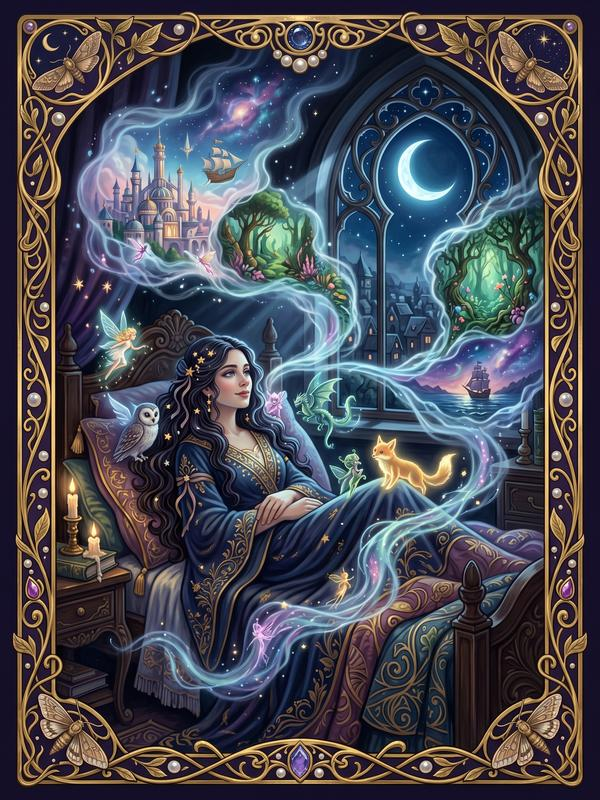
NOKB受信 / 霊的 / 親和 / 構築
夢幻の巡礼者
世界は、私だけに読める 言語で、語りかけてくる。
必殺技【夢見の千里眼】
この魂を読む →
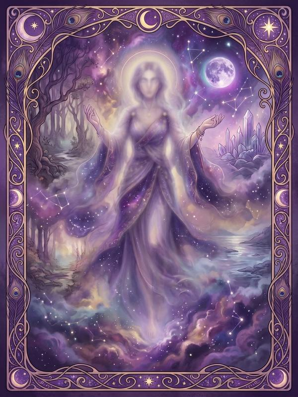
NOKF受信 / 霊的 / 親和 / 流動
迷宮の亡霊
私は、二つの世界を 同時に、生きている。
必殺技【霊域遊泳】
この魂を読む →
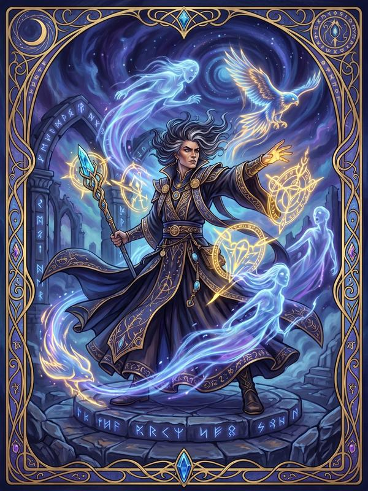
XORB干渉 / 霊的 / 畏怖 / 構築
降霊の執行者
私は、見えないものに、 名前と居場所を与える。
必殺技【祓いの執行】
この魂を読む →
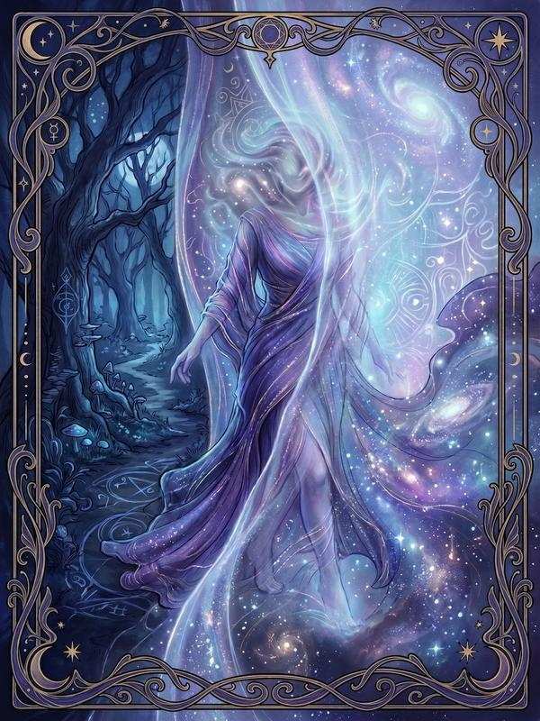
XORF干渉 / 霊的 / 畏怖 / 流動
神宿りの舞手
神聖なものが、 私の身を借りて顕れる。
必殺技【神降ろし】
この魂を読む →

XOKB干渉 / 霊的 / 親和 / 構築
招霊の主
私は、見えない隣人と、 日常を、共にしている。
必殺技【招霊の作法】
この魂を読む →
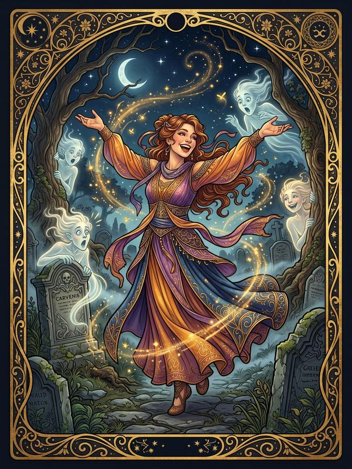
XOKF干渉 / 霊的 / 親和 / 流動
霊界のムードメーカー
私がいると、なぜか、 場が、ほぐれていく。
必殺技【霊よ、こんにちは】
この魂を読む →
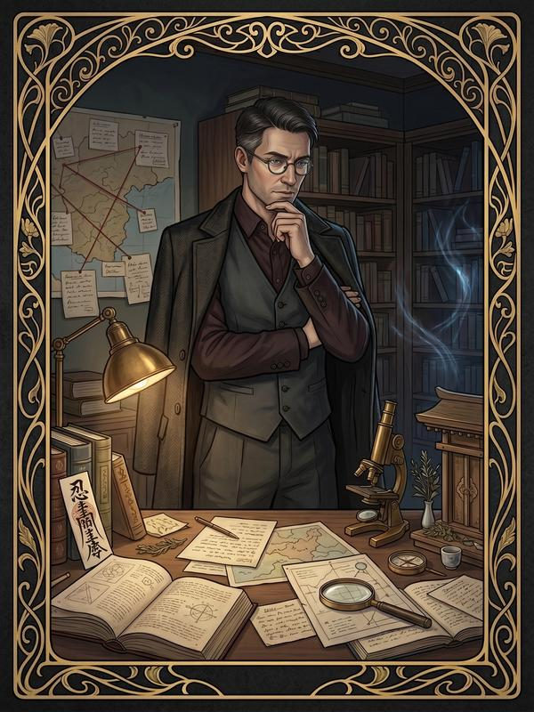
XLRB干渉 / 科学 / 畏怖 / 構築
鋼鉄の霊査官
私はこの世界で起きるすべてに、 納得のいく説明を求める。
必殺技【霊的解析眼】
この魂を読む →
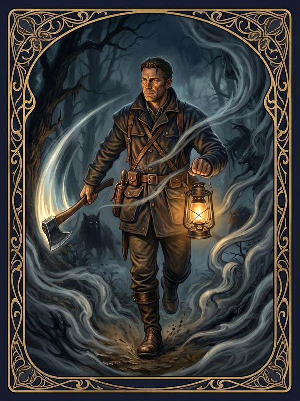
XLRF干渉 / 科学 / 畏怖 / 流動
闇切りの狩人
侮れないと知っている。 だから、確かめずにいられない。
必殺技【異変察知の眼】
この魂を読む →
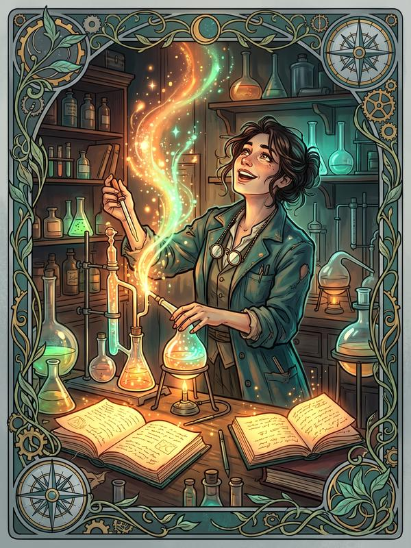
XLKB干渉 / 科学 / 親和 / 構築
好奇の検証者
不思議は怖いものじゃない。 面白いものだ。
必殺技【怪異検証術】
この魂を読む →
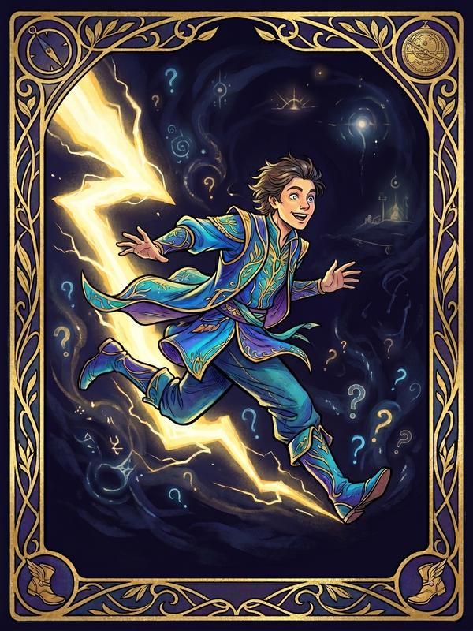
XLKF干渉 / 科学 / 親和 / 流動
閃光の突撃者
気になったら、 もう足が動いている。
必殺技【閃光突撃】
この魂を読む →
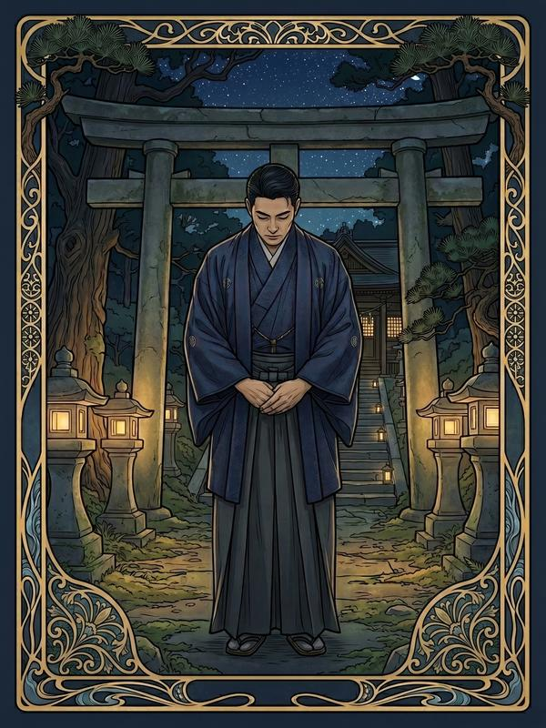
NLRB受信 / 科学 / 畏怖 / 構築
崇高なるリアリスト
信じるかどうかより、 礼節があるかどうかだ。
必殺技【不動の礼節】
この魂を読む →
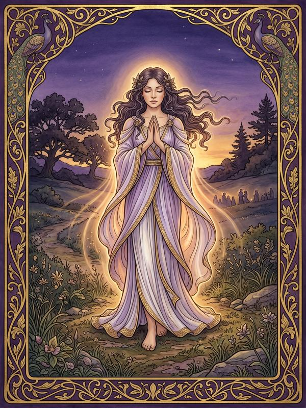
NLRF受信 / 科学 / 畏怖 / 流動
世界平和の祈り人
信じるより先に、 願っている。
必殺技【万愛の祈り】
この魂を読む →
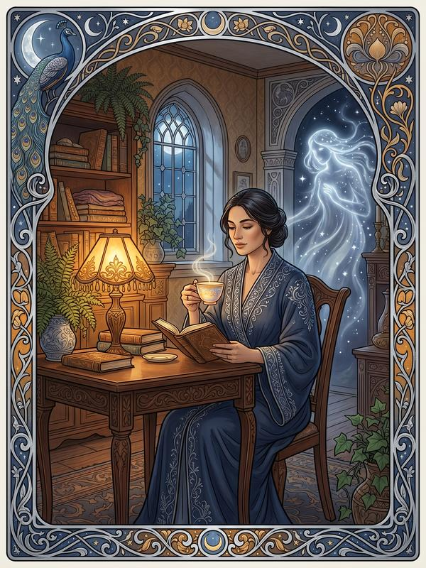
NLKB受信 / 科学 / 親和 / 構築
無意識の結界師
彼らがそこにいても、 私は私の暮らしを続ける。
必殺技【日常結界】
この魂を読む →
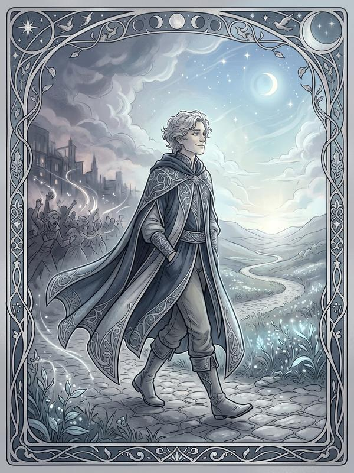
NLKF受信 / 科学 / 親和 / 流動
無縁の自由人
私には関係ない、と 言える強さもある。
必殺技【無縁の盾】
この魂を読む →
本診断は娯楽（エンターテインメント）を目的としたものであり、医学的・心理学的な診断ではありません。